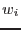

| Parameter | Mand | Type | Default | Constraints |
| eventsets | yes | dataset | | |
A list of the event sets which should contribute the the calculation of start and stop times for all time series.
|
| srctab | no | table | srctab.ds:SRCLIST | |
The input source list (in the format created by srcmatch). Note this file will be modified (namely, the SPECTRA and TSERIES columns are written) if setflags=`yes'.
|
| outsrcset | no | dataset | outsrcset.ds | |
The output source list.
|
| mintotalcts | no | real | 500 | |
 in equation 1 must exceed this value for a source to pass. in equation 1 must exceed this value for a source to pass.
|
| mindetml | no | real | 15 | |
For a source to pass, ii_DET_ML must be  mindetml and ii_MASKFRAC must be minmaskfrac for at least one of the instruments ii. mindetml and ii_MASKFRAC must be minmaskfrac for at least one of the instruments ii.
|
| minmaskfrac | no | real | 0.5 | |
For a source to pass, ii_DET_ML must be mindetml and ii_MASKFRAC must be minmaskfrac for at least one of the instruments ii.
|
| numhexchar | no | int | 3 | |
This parameter specifies the number of characters to be allocated to hexadecimal source ID numbers, and thus limits the maximum value of the source ID number.
|
| instweights | no | real | 3.5 1.0 1.0 | |
The (pre-normalization) weights  in equation 1. The order is in PN/M1/M2.
|
| setflags | no | bool | no | |
Whether to set the SPECTRA or TSERIES columns in the input source list.
|
| Parameter | Mand | Type | Default | Constraints |